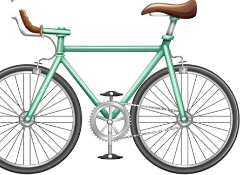

📍PRZYGODA • 1/8
Ruszamy!Obserwuj drogę i otoczenie.Najpierw zobaczysz sytuację, a dopiero potem pytanie.PRĘDKOŚĆ30km/h
01
PRZYGOTOWANIE ROWERUSprawdź wyposażenie przed wyjazdem
Sprawdź rower przed jazdą
Kliknij właściwe elementy roweru. Wszystkie pięć trzeba sprawdzić.
ROWER • WIDOK Z BOKU

0 / 5 sprawdzonych